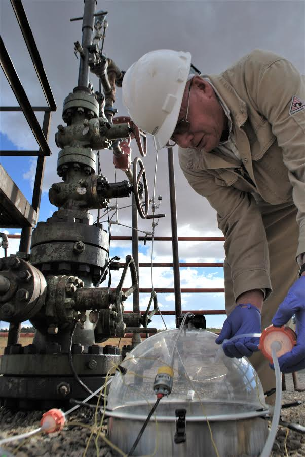
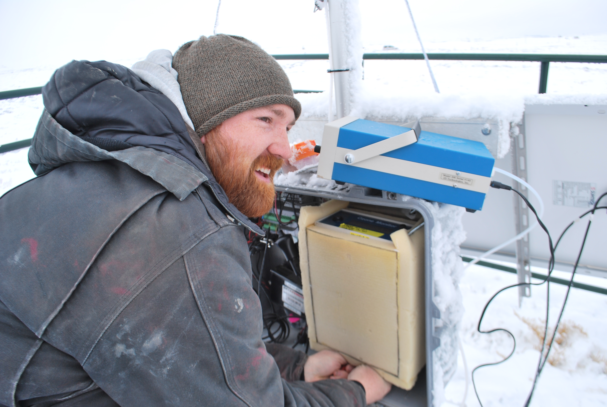
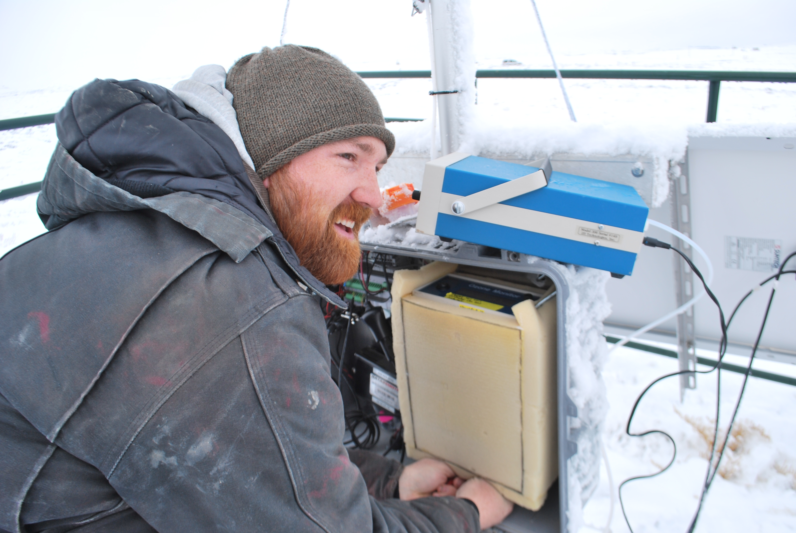

9th Annual Conference: Thursday, March 27, 2025 at Utah State University
(Remote option available for oral sessions)
Important Dates
Abstract deadline: February 14
Early registration deadline: March 18
We are happy to announce that next year the conference will be held at
Brigham Young University on March 26, 2026.
More details will be posted here as they become available.
Air Quality: Science for Solutions 2025
Thursday, March 27, 2025
Air Quality: Science for Solutions is an annual conference on air quality, especially for Utah and the Intermountain West. It began with a pair of conferences by the same name hosted by the Utah Department of Environmental Quality, Division of Air Quality; the Program for Air Quality Health and Society at the University of Utah; and the Utah State University Bingham Entrepreneurship & Energy Research Center in 2015.
The mission of this conference is to bridge divides that separate researchers of various disciplines from each other, from professionals in the industrial and regulatory realms, and from the public, and to facilitate a cross-pollination of ideas working towards the development of solutions.
Topics
The subject of this conference is air science. Topic areas include atmospheric chemistry, health impacts, meteorology, emissions, modeling, and public policy. While this conference specializes in topics associated with air quality issues important to Utah and the Intermountain West, presentations on air quality topics that are related in some way will also be considered.
Oral Sessions
There are no parallel sessions. Oral presentations should be understandable, at least in part, to air scientists from all fields. A major goal of this conference is the crosspollination of ideas between fields of study. The oral talks are 10 to 12 minutes long with 3 minutes for questions and change over to the next talk.
Poster Sessions
The posters will be viewable at the conference for the duration of the conference. The breaks will be held near the posters to facilitate interaction. There will be a student poster competition as well.
Our Supporters
This conference is made possible by the generous financial support of the following organizations:


Air Quality outreach program by the University of Utah and Dr. Kerry Kelly where children build air quality sensors with (augmented) Lego bricks.

Drone based air quality measurements being made by Dr. Kerry Kelly's research group at the University of Utah.
 

Dr. Seth Lyman's air quality research group measuring the air in the Uinta Basin no matter the conditions. Dr. Lyman is with Utah State University, Vernal.